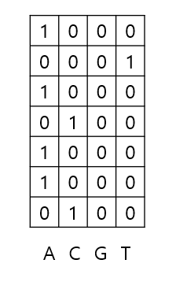
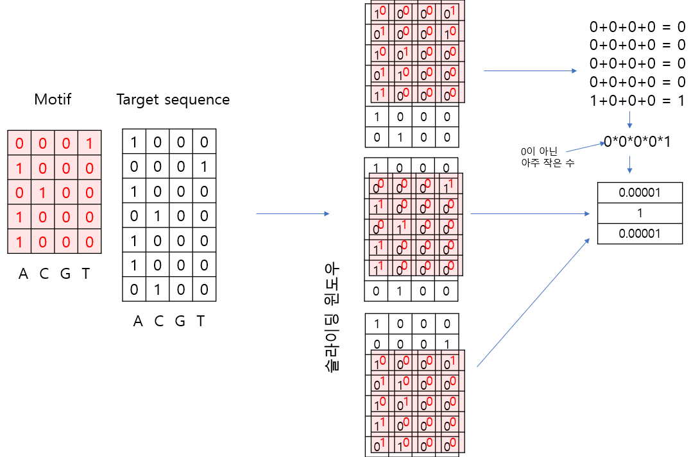
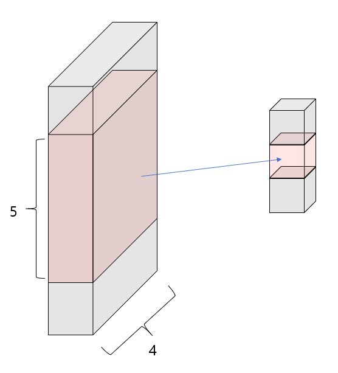

import os
os.chdir('drive/MyDrive/2024-cnu-lecture')7 Deep Learning
7.1 Convolutional Neual Network
- 딥러닝 기반 DNA 서열 분석 가이드
- http://www.btnews.or.kr/bbs/board.php?bo_table=bt_news&wr_id=342
7.1.1 목표
- 임의의 활성을 갖는 서열을 분류하는 CNN 모형 개발 (시뮬레이션)
- 예시) 임의의 전사인자가 결합하는 특정 DNA 모티프 찾는 모형 개발. 즉, 모형 개발 후 임의의 DNA 서열을 모형에 넣었을 때 해당 전사인자가 입력 DNA 서열에 붙으면 1 붙지 않으면 0 이라고 예측하는 모형 개발
7.1.2 데이터
딥러닝을 위해서는 라벨링 데이터가 필요함 (최근 self-supervised learning에서는 필수는 아님). 서열분석의 경우에는 DNA 서열과 함께 해당 서열의 표현형이 라벨이 될 수 있음 (Genotype-phenotype 짝 데이터). 예를 들어 특정 전사인자가 결합하는 DNA 서열을 예측하는 딥러닝 모형을 학습하고자 할 경우 전사인자의 서열 데이터와 해당 전사인자가 DNA에 실제로 붙는지를 나타내는 True 또는 False 라벨이 붙은 데이터가 필요함.
일반적으로 통계적 분석을 위한 데이터는 샘플의 개수와 (행) 변수의 개수로 (열) 구분되어 2차원 배열 형태로 표현. 딥러닝에서도 같은 방식으로 데이터를 표현하며 필요한 샘플의 수는 학습할 모형의 복잡도에 따라서 달라질 수 있지만 최소 수천 개 이상이 필요하며 수 만개 이상의 가능한 많은 데이터를 사용 권장.
딥러닝을 위해서 수집된 데이터 세트는 모형 학습을 위한 Training 데이터와 Test 데이터로 나누어 사용되며 Training 데이터는 또다시 Training 데이터와 Validation 데이터로 나누어 구분.
7.1.3 One-hot encoding
딥러닝을 위해서 데이터는 숫자(기계가 인식 가능한)로 표현 필요. One-hot encoding은 딥러닝에서 가장 널리 사용되는 방법 중 하나이며 4 종류의 염기를 갖는 DNA의 경우 “A”는 [1,0,0,0], “T”는 [0,0,0,1], “G”는 [0,0,1,0], 그리고 “C”는 [0,1,0,0] 으로 인코딩 할 수 있음
import numpy as np
my_string="ATACAA"
my_array=np.array(list(my_string))
print(my_array)['A' 'T' 'A' 'C' 'A' 'A']list(my_string)['A', 'T', 'A', 'C', 'A', 'A']- Numpy Dimension 관련 내용은 앞서 강의 numpy 부분 참고
display(np.zeros(5))
display(np.zeros((7,5)))array([0., 0., 0., 0., 0.])array([[0., 0., 0., 0., 0.],
[0., 0., 0., 0., 0.],
[0., 0., 0., 0., 0.],
[0., 0., 0., 0., 0.],
[0., 0., 0., 0., 0.],
[0., 0., 0., 0., 0.],
[0., 0., 0., 0., 0.]])box = np.zeros((3, 7, 5))
type(box)numpy.ndarrayonehot_encode = np.zeros((len(my_array),4), dtype=int)
base_dict = {"A":0, "C":1, "G":2, "T":3}
for i in range(len(my_array)):
onehot_encode[i, base_dict[my_array[i]]] = 1
print(onehot_encode)
print(onehot_encode.shape)[[1 0 0 0]
[0 0 0 1]
[1 0 0 0]
[0 1 0 0]
[1 0 0 0]
[1 0 0 0]]
(6, 4)- one-hot 방식으로 변환한 서열 데이터

7.1.4 모티프 설정
PFM (Position Frequency Matrix)와 PWM (Position Weight Matrix) 개념 이해 필요. Alignment가 수행된 몇 개의 서열들을 가정하면 PFM은 이 서열들의 특정 위치에 A, T, G, C 각 염기들의 빈도수를 나타내며 PWM은 각 염기의 비율을 나타냄.
from Bio import motifs
from Bio.Seq import Seq
instances = [Seq("TACAA"), Seq("TACGA"), Seq("TACAA")]
m = motifs.create(instances)
pfm = m.counts
print(pfm)
pwm = m.counts.normalize(pseudocounts=0.5)
print (pwm) 0 1 2 3 4
A: 0.00 3.00 0.00 2.00 3.00
C: 0.00 0.00 3.00 0.00 0.00
G: 0.00 0.00 0.00 1.00 0.00
T: 3.00 0.00 0.00 0.00 0.00
0 1 2 3 4
A: 0.10 0.70 0.10 0.50 0.70
C: 0.10 0.10 0.70 0.10 0.10
G: 0.10 0.10 0.10 0.30 0.10
T: 0.70 0.10 0.10 0.10 0.10
pseudocounts는 계산시 NULL이나 0으로 나누어지는 경우 방지. 특정 서열 모티프의 PWM은 새로운 서열이 One-hot encoding 방식으로 주어져 있을 경우 서열 처음 위치부터 마지막까지 Sliding window 방식으로 해당 모티프가 있는 위치를 탐색할 수 있음. 다음은 위 주어진 pwm모티프를 0, 1로만 가정하여 해당 모티프의 존재 유무를 계산하는 방법을 보여줌.

위와 같이 길이3 배열에 1이 있을 경우 타깃 서열에 모티프와 같은 서열이 있음을 알 수 있음
앞서 “ATACAA” 서열에서 위 PWM 모티프가 존재하는지 탐색. “ATACAA” 는 길이 5인 슬라이딩 윈도우를 사용하면 “ATACA”와 “TACAA” 두 개의 서열로 나눌 수 있음. 이 두 서열을 One-hot encoding으로 전환 후 위 PWM과 원소들끼리 곱하면 One-hot encoding에서 0이 아닌 위치와 동일 위치의 PWM 값들만 남게 되므로 0이 아닌 값들을 모두 곱한 후 log를 취해 주면 해당 서열이 모티프와 얼마나 비슷한지를 나타내는 스칼라 값이 구해짐. 이론적으로 이 값이 0이면 동일한 서열임.
pwm_arr = np.array(list(pwm.values())).transpose()
print(pwm_arr.shape)
print(onehot_encode.shape)
print(onehot_encode[0:5,].shape)
print(onehot_encode[1:6,].shape)
s1 = np.multiply(onehot_encode[0:5,], pwm_arr)
s2 = np.multiply(onehot_encode[1:6,], pwm_arr)
print(s1)
print(s2)
print(np.sum(s1, axis=1))
print(np.prod(np.sum(s1, axis=1)))
print(np.log(np.prod(np.sum(s1, axis=1)))) #s1 score
print(np.log(np.prod(np.sum(s2, axis=1)))) #s2 score(5, 4)
(6, 4)
(5, 4)
(5, 4)
[[0.1 0. 0. 0. ]
[0. 0. 0. 0.1]
[0.1 0. 0. 0. ]
[0. 0.1 0. 0. ]
[0.7 0. 0. 0. ]]
[[0. 0. 0. 0.7]
[0.7 0. 0. 0. ]
[0. 0.7 0. 0. ]
[0.5 0. 0. 0. ]
[0.7 0. 0. 0. ]]
[0.1 0.1 0.1 0.1 0.7]
7.000000000000002e-05
-9.567015315914915
-2.119846956314875- 딥러닝 스타일로 배열을 가시화 할 경우 다음과 같이 표현 가능

7.2 모의 서열 데이터 생성
서열 중간 motif를 넣어서 임의의 시뮬레이션 positive 데이터를 1000개 생성하고 랜덤한 서열을 넣어 negative 데이터를 1000개 생성함
import numpy as np
seq_length = 20
num_sample = 1000
#motif CCGGAA
motif_pwm = np.array([[10.41, 22.86, 1.92, 1.55, 98.60, 86.66],
[68.20, 65.25, 0.50, 0.35, 0.25, 2.57],
[17.27, 8.30, 94.77, 97.32, 0.87, 0.00],
[4.13, 3.59, 2.81, 0.78, 0.28, 10.77]])
pwm = np.hstack([np.ones((4, 7)), motif_pwm, np.ones((4, 7))])
pos = np.array([np.random.choice( ['A', 'C', 'G', 'T'], num_sample,
p=pwm[:,i]/sum(pwm[:,i])) for i in range(seq_length)]).transpose()
neg = np.array([np.random.choice( ['A', 'C', 'G', 'T'], num_sample,
p=np.array([1,1,1,1])/4) for i in range(seq_length)]).transpose()
print(pos.shape)
display([''.join(x) for x in pos[1:5,]])
print()
display([''.join(x) for x in neg[1:5,]])(1000, 20)
['AGCGTAGGCGGAACATAATA',
'GGATCGTCAGGATCACCGCC',
'CCGAGTCACGGAATTAACTG',
'AACATCAGCGGAAGCTTTGT']['TTCCAATTACCGACCTGGAT',
'ATTGATTTCCTGCCAAGATC',
'AGTGAGCTGCTTTAGGTCCC',
'TGTGAGGGCTTAGATGAATG']7.2.1 DNA 서열 데이터 전처리
base_dict = {'A':0, 'C':1, 'G':2, 'T':3}
# response variable for pos
onehot_encode_pos = np.zeros((num_sample, seq_length, 4))
onehot_encode_pos_label = np.zeros((num_sample, 2), dtype=int)
onehot_encode_pos_label[:,0] = 1
# print(onehot_encode_pos_label)
# response variable for pos
onehot_encode_neg = np.zeros((num_sample, seq_length, 4))
onehot_encode_neg_label = np.zeros((num_sample, 2), dtype=int)
onehot_encode_neg_label[:,1] = 1
# print(onehot_encode_neg_label)
# convert sequence to onehot
for i in range(num_sample):
for j in range(seq_length):
onehot_encode_pos[i,j,base_dict[pos[i,j]]] = 1
onehot_encode_neg[i,j,base_dict[neg[i,j]]] = 1
# concatenation
X = np.vstack((onehot_encode_pos, onehot_encode_neg))
y = np.vstack((onehot_encode_pos_label, onehot_encode_neg_label))
print(X.shape, y.shape)
# (2000, 20, 4) (2000, 2)(2000, 20, 4) (2000, 2)- PyTorch Conv1d는 입력 데이터가 [batch_size, channels, length]의 형식이므로 transpose(1,2) 적용
import torch
from torch.utils.data import TensorDataset, DataLoader
from sklearn.model_selection import train_test_split
# 데이터를 훈련 세트와 테스트 세트로 나눔
X_train, X_test, y_train, y_test = train_test_split(X, y, test_size=0.2, random_state=125)
print(X_train.shape, y_train.shape)
# NumPy 배열을 PyTorch 텐서로 변환
X_train = torch.tensor(X_train, dtype=torch.float32).transpose(1,2)
X_test = torch.tensor(X_test, dtype=torch.float32).transpose(1,2)
y_train = torch.tensor(y_train, dtype=torch.float32)
y_test = torch.tensor(y_test, dtype=torch.float32)
print(y_test.dtype)
# DataLoader 설정
train_dataset = TensorDataset(X_train, y_train)
train_loader = DataLoader(train_dataset, batch_size=64, shuffle=True)
print(train_loader.dataset.tensors[0].shape)
print(train_loader.dataset.tensors[1].shape)
test_dataset = TensorDataset(X_test, y_test)
test_loader = DataLoader(test_dataset, batch_size=64, shuffle=False)(1600, 20, 4) (1600, 2)
torch.float32
torch.Size([1600, 4, 20])
torch.Size([1600, 2])import torch
X_torch = torch.tensor(X_train, dtype=torch.float32)
print(X_torch.shape)torch.Size([1600, 4, 20])/tmp/ipykernel_341094/3124571761.py:3: UserWarning: To copy construct from a tensor, it is recommended to use sourceTensor.clone().detach() or sourceTensor.clone().detach().requires_grad_(True), rather than torch.tensor(sourceTensor).
X_torch = torch.tensor(X_train, dtype=torch.float32)7.3 모델 정의
import torch.nn as nn
import torch.optim as optim
import torch
import torch.nn as nn
import torch.optim as optim
class DNA_CNN(nn.Module):
def __init__(self):
super(DNA_CNN, self).__init__()
self.conv1 = nn.Conv1d(in_channels=4, out_channels=16, kernel_size=3, padding=1)
self.relu = nn.ReLU()
self.maxpool = nn.MaxPool1d(kernel_size=2)
self.flatten = nn.Flatten()
self.fc1 = nn.Linear(160, 64) # Adjust the input features according to your pooling and conv1d output
self.fc2 = nn.Linear(64, 2) # Adjust according to your problem's needs (e.g., number of classes)
#self.softmax = nn.Softmax(dim=1)
def forward(self, x):
x = self.conv1(x)
x = self.relu(x)
x = self.maxpool(x)
x = self.flatten(x)
x = self.fc1(x)
x = self.fc2(x)
#x = self.softmax(x)
return x
model = DNA_CNN()
if torch.cuda.is_available():
model.cuda()
# Loss and optimizer
criterion = nn.CrossEntropyLoss()
optimizer = optim.Adam(model.parameters(), lr=0.001)
from torchsummary import summary
summary(model, input_size=(4, 20)) # (Channels, Length)----------------------------------------------------------------
Layer (type) Output Shape Param #
================================================================
Conv1d-1 [-1, 16, 20] 208
ReLU-2 [-1, 16, 20] 0
MaxPool1d-3 [-1, 16, 10] 0
Flatten-4 [-1, 160] 0
Linear-5 [-1, 64] 10,304
Linear-6 [-1, 2] 130
================================================================
Total params: 10,642
Trainable params: 10,642
Non-trainable params: 0
----------------------------------------------------------------
Input size (MB): 0.00
Forward/backward pass size (MB): 0.01
Params size (MB): 0.04
Estimated Total Size (MB): 0.05
----------------------------------------------------------------7.4 훈련
# 훈련 루프
num_epochs = 20
for epoch in range(num_epochs):
for inputs, labels in train_loader:
if torch.cuda.is_available():
inputs, labels = inputs.cuda(), labels.cuda()
# Forward pass
outputs = model(inputs)
loss = criterion(outputs, labels)
# Backward and optimize
optimizer.zero_grad()
loss.backward()
optimizer.step()
print(f'Epoch [{epoch+1}/{num_epochs}], Loss: {loss.item():.4f}')
Epoch [1/20], Loss: 0.4758
Epoch [2/20], Loss: 0.1928
Epoch [3/20], Loss: 0.0787
Epoch [4/20], Loss: 0.0622
Epoch [5/20], Loss: 0.0541
Epoch [6/20], Loss: 0.0364
Epoch [7/20], Loss: 0.0975
Epoch [8/20], Loss: 0.0732
Epoch [9/20], Loss: 0.0431
Epoch [10/20], Loss: 0.0285
Epoch [11/20], Loss: 0.0258
Epoch [12/20], Loss: 0.1933
Epoch [13/20], Loss: 0.0316
Epoch [14/20], Loss: 0.0399
Epoch [15/20], Loss: 0.0546
Epoch [16/20], Loss: 0.0661
Epoch [17/20], Loss: 0.0291
Epoch [18/20], Loss: 0.0105
Epoch [19/20], Loss: 0.0390
Epoch [20/20], Loss: 0.0536# 모델 평가
model.eval()
with torch.no_grad():
correct = 0
total = 0
for inputs, labels in test_loader:
if torch.cuda.is_available():
inputs, labels = inputs.cuda(), labels.cuda()
outputs = model(inputs)
#print(outputs.data)
_, predicted = torch.max(outputs.data, 1)
#print(predicted)
total += labels.size(0)
labels_max = torch.max(labels, 1)[1]
#print(labels_max)
correct += (predicted == labels_max).sum().item()
print(f'Accuracy of the model on the test images: {100 * correct / total} %')Accuracy of the model on the test images: 97.75 %- 검증을 위한 데이터 저장, 훈련, 예측 동시 수행
import matplotlib.pyplot as plt
# 데이터 저장을 위한 리스트 초기화
train_losses = []
val_accuracies = []
num_epochs = 200
for epoch in range(num_epochs):
model.train()
running_loss = 0.0
for inputs, labels in train_loader:
if torch.cuda.is_available():
inputs, labels = inputs.cuda(), labels.cuda()
# Forward pass
outputs = model(inputs)
loss = criterion(outputs, labels)
# Backward and optimize
optimizer.zero_grad()
loss.backward()
optimizer.step()
running_loss += loss.item() * inputs.size(0)
epoch_loss = running_loss / len(train_loader.dataset)
train_losses.append(epoch_loss)
# 모델 평가
model.eval()
correct = 0
total = 0
with torch.no_grad():
for inputs, labels in test_loader:
if torch.cuda.is_available():
inputs, labels = inputs.cuda(), labels.cuda()
outputs = model(inputs)
_, predicted = torch.max(outputs.data, 1)
total += labels.size(0)
labels_max = torch.max(labels, 1)[1]
correct += (predicted == labels_max).sum().item()
epoch_accuracy = 100 * correct / total
val_accuracies.append(epoch_accuracy)
print(f'Epoch [{epoch+1}/{num_epochs}], Loss: {epoch_loss:.4f}, Accuracy: {epoch_accuracy:.2f}%')
# 그래프 그리기
plt.figure(figsize=(12, 5))
plt.subplot(1, 2, 1)
plt.plot(train_losses, label='Training Loss')
plt.title('Training Loss')
plt.xlabel('Epoch')
plt.ylabel('Loss')
plt.legend()
plt.subplot(1, 2, 2)
plt.plot(val_accuracies, label='Validation Accuracy')
plt.title('Validation Accuracy')
plt.xlabel('Epoch')
plt.ylabel('Accuracy (%)')
plt.legend()
plt.show()Epoch [1/200], Loss: 0.0022, Accuracy: 96.50%
Epoch [2/200], Loss: 0.0019, Accuracy: 96.50%
Epoch [3/200], Loss: 0.0018, Accuracy: 96.50%
Epoch [4/200], Loss: 0.0017, Accuracy: 96.50%
Epoch [5/200], Loss: 0.0017, Accuracy: 96.50%
Epoch [6/200], Loss: 0.0017, Accuracy: 96.75%
Epoch [7/200], Loss: 0.0018, Accuracy: 96.25%
Epoch [8/200], Loss: 0.0021, Accuracy: 96.75%
Epoch [9/200], Loss: 0.0014, Accuracy: 96.75%
Epoch [10/200], Loss: 0.0015, Accuracy: 96.75%
Epoch [11/200], Loss: 0.0013, Accuracy: 96.50%
Epoch [12/200], Loss: 0.0014, Accuracy: 96.75%
Epoch [13/200], Loss: 0.0014, Accuracy: 96.25%
Epoch [14/200], Loss: 0.0014, Accuracy: 96.75%
Epoch [15/200], Loss: 0.0011, Accuracy: 96.50%
Epoch [16/200], Loss: 0.0011, Accuracy: 96.50%
Epoch [17/200], Loss: 0.0010, Accuracy: 96.50%
Epoch [18/200], Loss: 0.0010, Accuracy: 96.75%
Epoch [19/200], Loss: 0.0010, Accuracy: 96.50%
Epoch [20/200], Loss: 0.0010, Accuracy: 96.75%
Epoch [21/200], Loss: 0.0011, Accuracy: 96.75%
Epoch [22/200], Loss: 0.0010, Accuracy: 96.75%
Epoch [23/200], Loss: 0.0010, Accuracy: 96.50%
Epoch [24/200], Loss: 0.0010, Accuracy: 96.50%
Epoch [25/200], Loss: 0.0010, Accuracy: 96.25%
Epoch [26/200], Loss: 0.0008, Accuracy: 96.75%
Epoch [27/200], Loss: 0.0007, Accuracy: 96.75%
Epoch [28/200], Loss: 0.0007, Accuracy: 96.75%
Epoch [29/200], Loss: 0.0007, Accuracy: 96.75%
Epoch [30/200], Loss: 0.0007, Accuracy: 96.75%
Epoch [31/200], Loss: 0.0007, Accuracy: 96.50%
Epoch [32/200], Loss: 0.0007, Accuracy: 96.75%
Epoch [33/200], Loss: 0.0006, Accuracy: 96.75%
Epoch [34/200], Loss: 0.0006, Accuracy: 96.75%
Epoch [35/200], Loss: 0.0006, Accuracy: 96.50%
Epoch [36/200], Loss: 0.0006, Accuracy: 96.50%
Epoch [37/200], Loss: 0.0006, Accuracy: 96.50%
Epoch [38/200], Loss: 0.0005, Accuracy: 96.75%
Epoch [39/200], Loss: 0.0005, Accuracy: 96.50%
Epoch [40/200], Loss: 0.0005, Accuracy: 96.50%
Epoch [41/200], Loss: 0.0005, Accuracy: 96.50%
Epoch [42/200], Loss: 0.0005, Accuracy: 96.50%
Epoch [43/200], Loss: 0.0005, Accuracy: 96.50%
Epoch [44/200], Loss: 0.0005, Accuracy: 96.50%
Epoch [45/200], Loss: 0.0004, Accuracy: 96.75%
Epoch [46/200], Loss: 0.0004, Accuracy: 96.50%
Epoch [47/200], Loss: 0.0004, Accuracy: 96.50%
Epoch [48/200], Loss: 0.0004, Accuracy: 96.50%
Epoch [49/200], Loss: 0.0004, Accuracy: 96.50%
Epoch [50/200], Loss: 0.0004, Accuracy: 96.50%
Epoch [51/200], Loss: 0.0004, Accuracy: 96.50%
Epoch [52/200], Loss: 0.0004, Accuracy: 96.50%
Epoch [53/200], Loss: 0.0004, Accuracy: 96.50%
Epoch [54/200], Loss: 0.0004, Accuracy: 96.75%
Epoch [55/200], Loss: 0.0004, Accuracy: 96.50%
Epoch [56/200], Loss: 0.0004, Accuracy: 96.50%
Epoch [57/200], Loss: 0.0003, Accuracy: 96.50%
Epoch [58/200], Loss: 0.0003, Accuracy: 96.50%
Epoch [59/200], Loss: 0.0003, Accuracy: 96.50%
Epoch [60/200], Loss: 0.0003, Accuracy: 96.50%
Epoch [61/200], Loss: 0.0003, Accuracy: 96.50%
Epoch [62/200], Loss: 0.0003, Accuracy: 96.75%
Epoch [63/200], Loss: 0.0003, Accuracy: 96.50%
Epoch [64/200], Loss: 0.0003, Accuracy: 96.50%
Epoch [65/200], Loss: 0.0003, Accuracy: 96.50%
Epoch [66/200], Loss: 0.0003, Accuracy: 96.50%
Epoch [67/200], Loss: 0.0003, Accuracy: 96.50%
Epoch [68/200], Loss: 0.0002, Accuracy: 96.50%
Epoch [69/200], Loss: 0.0003, Accuracy: 96.50%
Epoch [70/200], Loss: 0.0002, Accuracy: 96.50%
Epoch [71/200], Loss: 0.0002, Accuracy: 96.50%
Epoch [72/200], Loss: 0.0002, Accuracy: 96.50%
Epoch [73/200], Loss: 0.0002, Accuracy: 96.50%
Epoch [74/200], Loss: 0.0002, Accuracy: 96.50%
Epoch [75/200], Loss: 0.0002, Accuracy: 96.50%
Epoch [76/200], Loss: 0.0002, Accuracy: 96.50%
Epoch [77/200], Loss: 0.0002, Accuracy: 96.50%
Epoch [78/200], Loss: 0.0002, Accuracy: 96.75%
Epoch [79/200], Loss: 0.0002, Accuracy: 96.50%
Epoch [80/200], Loss: 0.0002, Accuracy: 96.75%
Epoch [81/200], Loss: 0.0002, Accuracy: 96.50%
Epoch [82/200], Loss: 0.0002, Accuracy: 96.50%
Epoch [83/200], Loss: 0.0002, Accuracy: 96.75%
Epoch [84/200], Loss: 0.0002, Accuracy: 96.50%
Epoch [85/200], Loss: 0.0002, Accuracy: 96.75%
Epoch [86/200], Loss: 0.0002, Accuracy: 96.50%
Epoch [87/200], Loss: 0.0002, Accuracy: 96.50%
Epoch [88/200], Loss: 0.0002, Accuracy: 96.75%
Epoch [89/200], Loss: 0.0002, Accuracy: 96.50%
Epoch [90/200], Loss: 0.0002, Accuracy: 96.50%
Epoch [91/200], Loss: 0.0002, Accuracy: 96.50%
Epoch [92/200], Loss: 0.0002, Accuracy: 96.50%
Epoch [93/200], Loss: 0.0001, Accuracy: 96.50%
Epoch [94/200], Loss: 0.0001, Accuracy: 96.75%
Epoch [95/200], Loss: 0.0001, Accuracy: 96.75%
Epoch [96/200], Loss: 0.0001, Accuracy: 96.75%
Epoch [97/200], Loss: 0.0001, Accuracy: 96.50%
Epoch [98/200], Loss: 0.0001, Accuracy: 96.50%
Epoch [99/200], Loss: 0.0001, Accuracy: 96.50%
Epoch [100/200], Loss: 0.0001, Accuracy: 96.50%
Epoch [101/200], Loss: 0.0001, Accuracy: 96.50%
Epoch [102/200], Loss: 0.0001, Accuracy: 96.75%
Epoch [103/200], Loss: 0.0001, Accuracy: 96.75%
Epoch [104/200], Loss: 0.0001, Accuracy: 96.75%
Epoch [105/200], Loss: 0.0001, Accuracy: 96.75%
Epoch [106/200], Loss: 0.0001, Accuracy: 96.75%
Epoch [107/200], Loss: 0.0001, Accuracy: 96.75%
Epoch [108/200], Loss: 0.0001, Accuracy: 96.75%
Epoch [109/200], Loss: 0.0001, Accuracy: 96.75%
Epoch [110/200], Loss: 0.0001, Accuracy: 96.75%
Epoch [111/200], Loss: 0.0001, Accuracy: 96.75%
Epoch [112/200], Loss: 0.0001, Accuracy: 96.75%
Epoch [113/200], Loss: 0.0001, Accuracy: 96.75%
Epoch [114/200], Loss: 0.0001, Accuracy: 96.75%
Epoch [115/200], Loss: 0.0001, Accuracy: 96.75%
Epoch [116/200], Loss: 0.0001, Accuracy: 96.75%
Epoch [117/200], Loss: 0.0001, Accuracy: 96.75%
Epoch [118/200], Loss: 0.0001, Accuracy: 96.75%
Epoch [119/200], Loss: 0.0001, Accuracy: 96.75%
Epoch [120/200], Loss: 0.0001, Accuracy: 97.00%
Epoch [121/200], Loss: 0.0001, Accuracy: 96.75%
Epoch [122/200], Loss: 0.0001, Accuracy: 96.75%
Epoch [123/200], Loss: 0.0001, Accuracy: 96.75%
Epoch [124/200], Loss: 0.0001, Accuracy: 96.75%
Epoch [125/200], Loss: 0.0001, Accuracy: 96.50%
Epoch [126/200], Loss: 0.0001, Accuracy: 96.75%
Epoch [127/200], Loss: 0.0001, Accuracy: 96.75%
Epoch [128/200], Loss: 0.0001, Accuracy: 96.75%
Epoch [129/200], Loss: 0.0001, Accuracy: 96.75%
Epoch [130/200], Loss: 0.0001, Accuracy: 96.75%
Epoch [131/200], Loss: 0.0001, Accuracy: 96.75%
Epoch [132/200], Loss: 0.0001, Accuracy: 96.75%
Epoch [133/200], Loss: 0.0001, Accuracy: 96.75%
Epoch [134/200], Loss: 0.0001, Accuracy: 96.75%
Epoch [135/200], Loss: 0.0001, Accuracy: 96.75%
Epoch [136/200], Loss: 0.0001, Accuracy: 96.75%
Epoch [137/200], Loss: 0.0001, Accuracy: 96.75%
Epoch [138/200], Loss: 0.0001, Accuracy: 96.75%
Epoch [139/200], Loss: 0.0001, Accuracy: 96.75%
Epoch [140/200], Loss: 0.0001, Accuracy: 96.75%
Epoch [141/200], Loss: 0.0001, Accuracy: 96.75%
Epoch [142/200], Loss: 0.0001, Accuracy: 96.75%
Epoch [143/200], Loss: 0.0001, Accuracy: 96.75%
Epoch [144/200], Loss: 0.0001, Accuracy: 96.75%
Epoch [145/200], Loss: 0.0001, Accuracy: 96.75%
Epoch [146/200], Loss: 0.0001, Accuracy: 96.75%
Epoch [147/200], Loss: 0.0001, Accuracy: 96.75%
Epoch [148/200], Loss: 0.0001, Accuracy: 96.75%
Epoch [149/200], Loss: 0.0001, Accuracy: 96.75%
Epoch [150/200], Loss: 0.0001, Accuracy: 96.75%
Epoch [151/200], Loss: 0.0001, Accuracy: 96.75%
Epoch [152/200], Loss: 0.0000, Accuracy: 96.75%
Epoch [153/200], Loss: 0.0000, Accuracy: 96.75%
Epoch [154/200], Loss: 0.0000, Accuracy: 96.75%
Epoch [155/200], Loss: 0.0000, Accuracy: 96.75%
Epoch [156/200], Loss: 0.0000, Accuracy: 96.75%
Epoch [157/200], Loss: 0.0000, Accuracy: 97.00%
Epoch [158/200], Loss: 0.0000, Accuracy: 96.75%
Epoch [159/200], Loss: 0.0000, Accuracy: 96.75%
Epoch [160/200], Loss: 0.0000, Accuracy: 96.75%
Epoch [161/200], Loss: 0.0000, Accuracy: 96.75%
Epoch [162/200], Loss: 0.0000, Accuracy: 96.75%
Epoch [163/200], Loss: 0.0000, Accuracy: 96.50%
Epoch [164/200], Loss: 0.0000, Accuracy: 96.75%
Epoch [165/200], Loss: 0.0000, Accuracy: 96.75%
Epoch [166/200], Loss: 0.0000, Accuracy: 96.75%
Epoch [167/200], Loss: 0.0000, Accuracy: 96.75%
Epoch [168/200], Loss: 0.0000, Accuracy: 96.75%
Epoch [169/200], Loss: 0.0000, Accuracy: 96.75%
Epoch [170/200], Loss: 0.0000, Accuracy: 96.75%
Epoch [171/200], Loss: 0.0000, Accuracy: 96.75%
Epoch [172/200], Loss: 0.0000, Accuracy: 96.75%
Epoch [173/200], Loss: 0.0000, Accuracy: 96.75%
Epoch [174/200], Loss: 0.0000, Accuracy: 96.75%
Epoch [175/200], Loss: 0.0000, Accuracy: 96.75%
Epoch [176/200], Loss: 0.0000, Accuracy: 96.75%
Epoch [177/200], Loss: 0.0000, Accuracy: 96.75%
Epoch [178/200], Loss: 0.0000, Accuracy: 96.75%
Epoch [179/200], Loss: 0.0000, Accuracy: 96.75%
Epoch [180/200], Loss: 0.0000, Accuracy: 96.75%
Epoch [181/200], Loss: 0.0000, Accuracy: 96.75%
Epoch [182/200], Loss: 0.0000, Accuracy: 96.75%
Epoch [183/200], Loss: 0.0000, Accuracy: 96.75%
Epoch [184/200], Loss: 0.0000, Accuracy: 96.75%
Epoch [185/200], Loss: 0.0000, Accuracy: 96.75%
Epoch [186/200], Loss: 0.0000, Accuracy: 96.75%
Epoch [187/200], Loss: 0.0000, Accuracy: 96.75%
Epoch [188/200], Loss: 0.0000, Accuracy: 96.75%
Epoch [189/200], Loss: 0.0000, Accuracy: 96.75%
Epoch [190/200], Loss: 0.0000, Accuracy: 96.75%
Epoch [191/200], Loss: 0.0000, Accuracy: 96.75%
Epoch [192/200], Loss: 0.0000, Accuracy: 96.75%
Epoch [193/200], Loss: 0.0000, Accuracy: 96.75%
Epoch [194/200], Loss: 0.0000, Accuracy: 96.75%
Epoch [195/200], Loss: 0.0000, Accuracy: 96.75%
Epoch [196/200], Loss: 0.0000, Accuracy: 96.75%
Epoch [197/200], Loss: 0.0000, Accuracy: 96.75%
Epoch [198/200], Loss: 0.0000, Accuracy: 96.75%
Epoch [199/200], Loss: 0.0000, Accuracy: 96.75%
Epoch [200/200], Loss: 0.0000, Accuracy: 96.75%